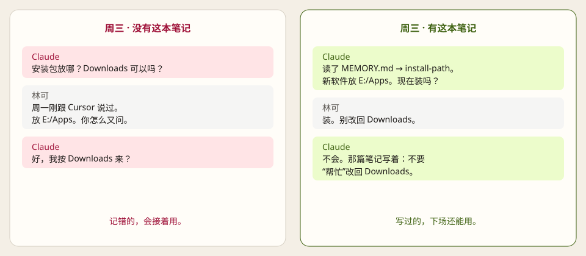

Cursor
用户规则
Settings → Rules → User Rules。对所有项目生效。只放在别的仓库里，它读不到这本笔记。
早上跟 Cursor 说好下载目录。晚上 Claude 又问一遍。下周 Codex 当没这回事。不是模型笨，是每家各记各的，而且那本账你通常打不开。
长期要记住的东西，写成你能打开的笔记。所有 AI 都读同一本。模型可以提案，你点头才许写。
不用装命令行。先建文件夹，再让每一家 AI 读它。
资源管理器新建文件夹。记事本粘贴后：另存为 → 文件名 MEMORY.md → 编码 UTF-8。不要存成 .txt，不要用 Word。若变成 MEMORY.md.txt，先勾选「文件扩展名」再删掉 .txt。
# 从这里进 这是共用记忆的入口。自包含问题不要打开这本库。 问到旧决定时，先读本页，再只打开下面点名的笔记。 还没有分篇。第一篇长期事实写好后，在这里加一行链接。 没说「记住 / 同意写入」，不要写。
D:/my-memory/ MEMORY.md
先改成真实路径再复制。反斜杠会自动收成 /。
长期记忆文件夹：<VAULT> 入口：<VAULT>/MEMORY.md 先读入口，再只打开索引点名的那几篇。 不要把整个文件夹读完。 除非我明确说「记住 / remember / 同意写入 / approve write」，不要写笔记。 先提最小改动。 不要存 Token、密码、Cookie。
Settings → Rules → User Rules。对所有项目生效。只放在别的仓库里，它读不到这本笔记。
写进会一直加载的 CLAUDE.md，或一条常开的 skill。
写进 Codex 的 AGENTS.md。每周扫描也读同一本。
Grok 或别的产品：同一段贴进用户规则或系统提示。
打开 D:/my-memory/MEMORY.md，告诉我第一行标题。不要猜，不要问我文件夹在哪。
它应该读到「从这里进」。若它还问路径，规则没贴上，或文件名其实是 MEMORY.md.txt。
下次要落长期事实，说「记住」或「同意写入」。它应该先提案，你点头再写。
想要完整空壳或林可那本，再装命令行：pip install git+https://github.com/hc-ui/cross-ai-memory.git，然后 aimem init ./my-memory 或 aimem init --demo ./look。
林可周一刚定过：新软件放 E:/Apps。周三换 Claude，现场会变成这样——

林可是虚构的。文件是真的。周一写入，周三另一家读到，周日只出清单。

先提案，再说「同意写入」。只多一篇笔记。
install-path.md新窗口，另一家产品。从 MEMORY.md 进。没有再问放哪。
林可的 MEMORY.md一条批准，一条驳回，一条还开着。正文一篇没动。
当周提案shared/install-path.md。不是空壳。12 篇，每篇有来源、置信、时效。自包含问题不准进库。问到旧决定，从 MEMORY.md 进，再只打开索引点名的那几篇。
lin-ke/ MEMORY.md 入口 shared/INDEX.md 索引，不是一堆聊天 shared/GOVERNANCE.md 怎么读、怎么写 shared/install-path.md 周一写下的长期事实 shared/preferences.md 希望每家 AI 怎么说话 shared/proxy.md 会过期的快照 shared/environment.md 现在在用哪几家 shared/CHANGELOG.md 只记被批准的写入 work/leafbox.md 写错过、又改回来 proposals/week-2026-08-24.md 周日清单，正文没动
厂商脑子里的错记忆，通常改不干净。写在笔记里的，可以改，还可以把否过的留在原页，免得下场 AI 再捡回来。
标准输出用 UTF-8。不要输出 GBK。Windows 控制台乱码是控制台的事，不是改工具的理由。
Windows 用 GBK。新对话再提，指到这里。没有新证据，就不要重开。
在仓库里打开原文每周提案本身不是写入。没有 同意写入，正文一篇不能动。
| ID | 日期 | 批准 | 改了什么 |
|---|---|---|---|
| MEM-20260818-01 | 08-18 | 同意写入 | 说话方式 |
| MEM-20260820-01 | 08-20 | 同意写入 | leafbox 第一次选 GBK |
| MEM-20260822-01 | 08-22 | 同意写入 | leafbox 改回 UTF-8 |
| MEM-20260824-01 | 08-24 | 同意写入 | 安装路径 E:/Apps |
方法写在 SPEC.md。实现可以换，门闩不该漂。
aimem check。本地提交用批次号。推送要另说「同意推送」。commit 只推进检查点，不是 git，不是改正文。冲突：你现在说的，大于旧笔记。刚核过的机器事实，大于模型自己记得的。两边打架就两句都留着，不许悄悄覆盖。
零依赖。它查断链、重复标题、过期快照、没编进索引、从 MEMORY.md 走不到的篇、以及疑似 Token。

pip install git+https://github.com/hc-ui/cross-ai-memory.git aimem tour aimem rule aimem check examples/lin-ke aimem collect scan
| 厂商记忆 | 向量自动记 | 这本笔记 | |
|---|---|---|---|
| 你能打开吗 | 通常不能 | 一块块切片 | 能打开、能搜、能 diff |
| 写错了 | 难改干净 | 下周当成事实 | 改一篇，否过的留在原页 |
| 跨产品 | 各记各的 | 各嵌各的 | 同一个文件夹 |
| 谁决定写入 | 模型 | 模型 | 你。没点头就不是事实 |
用 AI 的人会越来越多。一个人同时用两家、三家，也会越来越普通。厂商不会帮你在 Cursor 和 Claude 之间同步「上周拍板的那件事」。你需要一本自己的记忆，不是六本厂商记忆。
自动记忆失败得很危险：它写错了，还接着用。这套方法失败得很无聊：你忘了写一条。